FAIL
2026-10-07 09:30:17 · позиций 61 · FAIL 38 · аномалий вне деталей 8 · невязка фидуциалов 0.01803334629532296 мм · ECC 0.9851
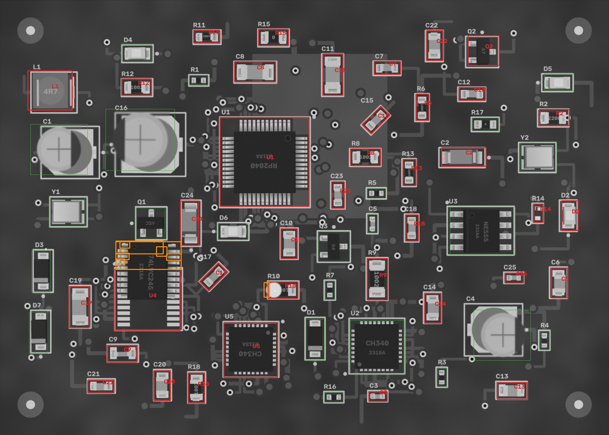
Кроп: живая плата (выровнена) | эталон (жёлтое — метка полярности,
синее — место метки при 180°) | карта отклонений σ.
MISSING — корпус не найден; MISMATCH — на месте не то, что в эталоне (голые площадки, другая деталь,
повреждение); POLARITY — развёрнута на 180° / метка не там; SHIFT / ROTATED — вне допуска;
ANOMALY — локальное отклонение от golden (мост, шарик, лишний припой, посторонний предмет).
| C10 10n · 0805 | FAIL MISMATCH | 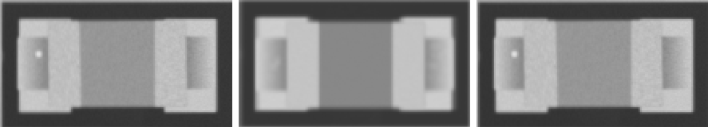 ncc 0.932 · ncc_thr 0.6 · mad 10.1 · mad_thr 7.8 · dx_mm -0.023 · dy_mm -0.023 · dtheta_deg -0.0 · anomaly_px 0 |
| C11 1u · 1206 | FAIL MISMATCH | 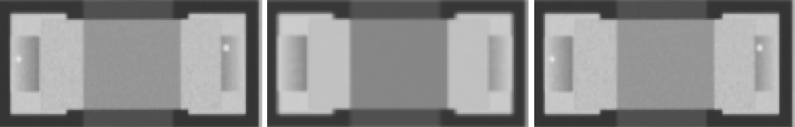 ncc 0.968 · ncc_thr 0.6 · mad 10.4 · mad_thr 7.6 · dx_mm 0.0 · dy_mm 0.0 · dtheta_deg -0.0 · anomaly_px 0 |
| C12 10n · 0603 | FAIL MISMATCH | 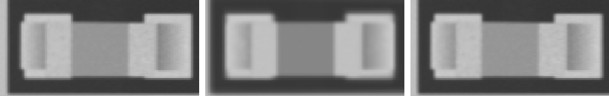 ncc 0.953 · ncc_thr 0.6 · mad 10.0 · mad_thr 8.0 · dx_mm -0.047 · dy_mm 0.0 · dtheta_deg -0.0 · anomaly_px 0 |
| C13 10u · 0805 | FAIL MISMATCH | 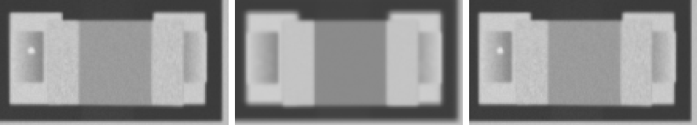 ncc 0.964 · ncc_thr 0.6 · mad 10.4 · mad_thr 7.8 · dx_mm 0.023 · dy_mm 0.0 · dtheta_deg -0.0 · anomaly_px 0 |
| C14 10n · 0805 | FAIL MISMATCH | 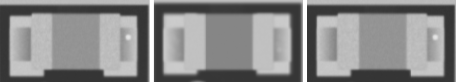 ncc 0.966 · ncc_thr 0.6 · mad 9.8 · mad_thr 7.7 · dx_mm 0.0 · dy_mm -0.047 · dtheta_deg -0.0 · anomaly_px 0 |
| C15 22p · 0603 | FAIL MISMATCH | 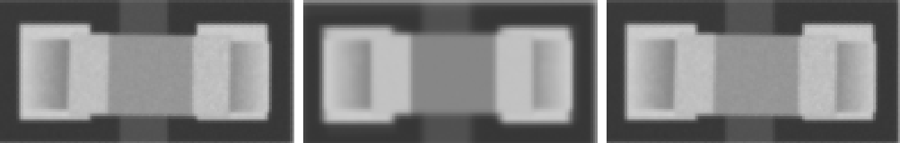 ncc 0.926 · ncc_thr 0.6 · mad 10.0 · mad_thr 8.0 · dx_mm 0.0 · dy_mm 0.023 · dtheta_deg -0.0 · anomaly_px 0 |
| C17 10u · 0603 | FAIL MISMATCH | 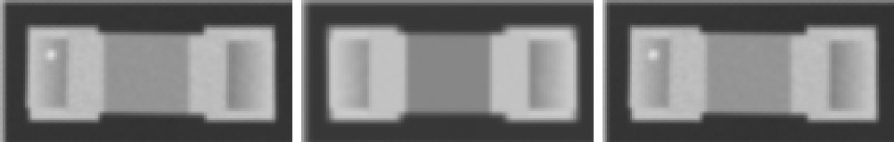 ncc 0.971 · ncc_thr 0.6 · mad 10.0 · mad_thr 7.9 · dx_mm 0.0 · dy_mm 0.0 · dtheta_deg -0.0 · anomaly_px 0 |
| C18 10n · 0603 | FAIL MISMATCH | 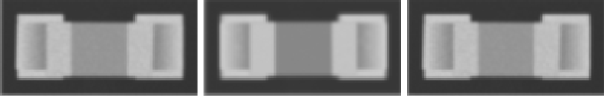 ncc 0.969 · ncc_thr 0.6 · mad 10.0 · mad_thr 8.1 · dx_mm 0.0 · dy_mm 0.0 · dtheta_deg -0.0 · anomaly_px 0 |
| C19 22p · 1206 | FAIL MISMATCH | 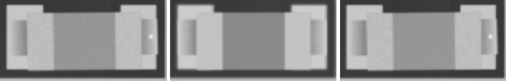 ncc 0.964 · ncc_thr 0.6 · mad 10.0 · mad_thr 7.4 · dx_mm 0.023 · dy_mm 0.0 · dtheta_deg -0.0 · anomaly_px 0 |
| C2 Tantalum_Case-A · Tantalum_Case-A | FAIL MISMATCH | 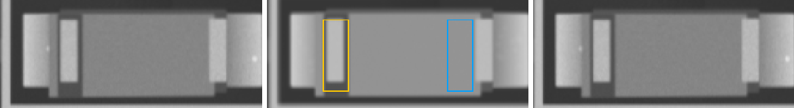 ncc 0.977 · ncc_thr 0.6 · ncc_180 0.726 · mad 12.5 · mad_thr 7.7 · mad_180 16.3 · dx_mm 0.023 · dy_mm 0.0 · dtheta_deg -0.0 · anomaly_px 0 |
| C20 4u7 · 0805 | FAIL MISMATCH | 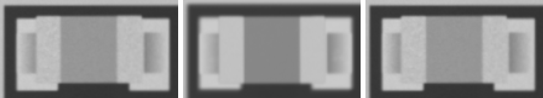 ncc 0.967 · ncc_thr 0.6 · mad 10.3 · mad_thr 7.6 · dx_mm 0.0 · dy_mm -0.023 · dtheta_deg -0.0 · anomaly_px 0 |
| C21 4u7 · 0603 | FAIL MISMATCH | 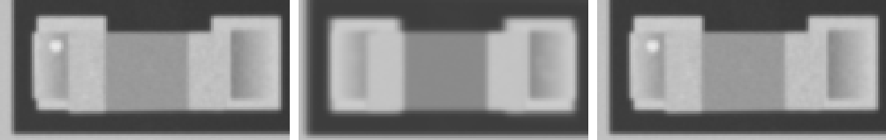 ncc 0.952 · ncc_thr 0.6 · mad 9.7 · mad_thr 8.0 · dx_mm -0.047 · dy_mm 0.023 · dtheta_deg -0.0 · anomaly_px 0 |
| C22 4u7 · 0805 | FAIL MISMATCH | 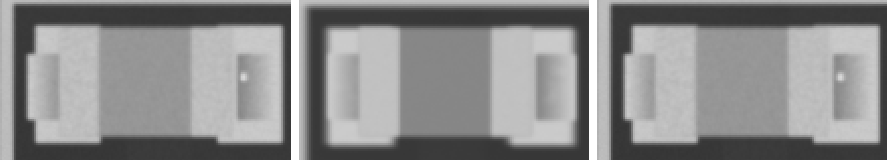 ncc 0.962 · ncc_thr 0.6 · mad 10.8 · mad_thr 7.7 · dx_mm -0.07 · dy_mm 0.023 · dtheta_deg -0.0 · anomaly_px 0 |
| C23 22p · 0603 | FAIL MISMATCH | 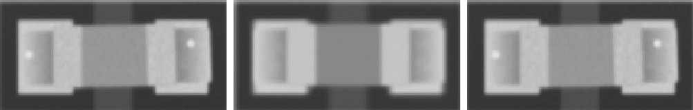 ncc 0.955 · ncc_thr 0.6 · mad 10.1 · mad_thr 8.0 · dx_mm 0.023 · dy_mm 0.0 · dtheta_deg -0.0 · anomaly_px 0 |
| C24 Tantalum_Case-A · Tantalum_Case-A | FAIL MISMATCH | 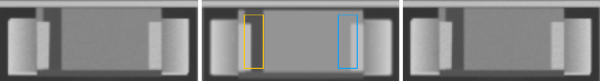 ncc 0.889 · ncc_thr 0.6 · ncc_180 0.505 · mad 11.6 · mad_thr 7.4 · mad_180 27.6 · dx_mm 0.047 · dy_mm 0.0 · dtheta_deg -0.0 · anomaly_px 0 |
| C25 100n · 0402 | FAIL MISMATCH | 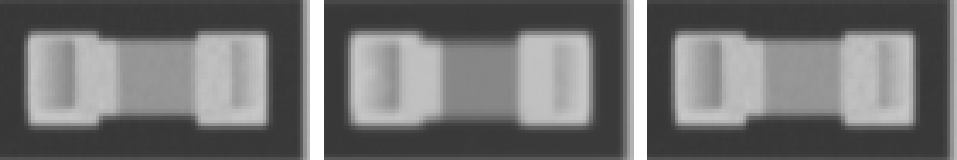 ncc 0.967 · ncc_thr 0.6 · mad 9.5 · mad_thr 9.3 · dx_mm 0.0 · dy_mm 0.0 · dtheta_deg -0.0 · anomaly_px 0 |
| C3 22p · 0402 | FAIL MISMATCH | 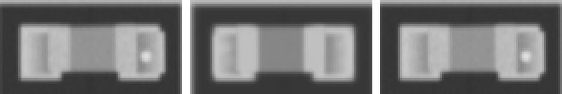 ncc 0.964 · ncc_thr 0.6 · mad 10.1 · mad_thr 8.8 · dx_mm 0.047 · dy_mm 0.0 · dtheta_deg -0.0 · anomaly_px 0 |
| C6 4u7 · 0805 | FAIL MISMATCH | 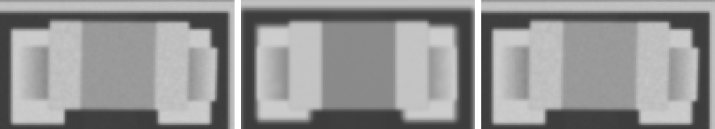 ncc 0.953 · ncc_thr 0.6 · mad 10.4 · mad_thr 7.8 · dx_mm 0.07 · dy_mm -0.047 · dtheta_deg -0.0 · anomaly_px 0 |
| C7 10u · 0603 | FAIL MISMATCH | 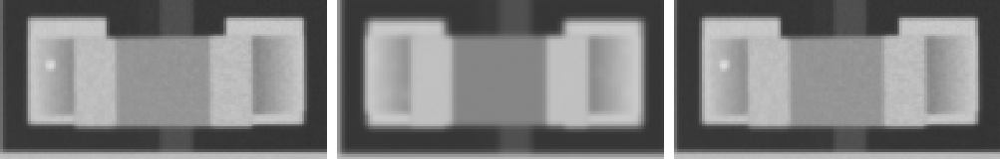 ncc 0.958 · ncc_thr 0.6 · mad 10.0 · mad_thr 8.0 · dx_mm 0.023 · dy_mm 0.023 · dtheta_deg -0.0 · anomaly_px 0 |
| C8 1u · 1206 | FAIL MISMATCH | 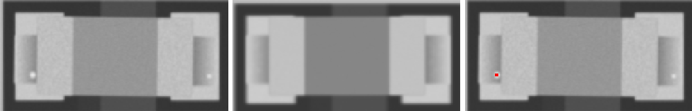 ncc 0.912 · ncc_thr 0.6 · mad 10.6 · mad_thr 7.5 · dx_mm -0.023 · dy_mm 0.07 · dtheta_deg -0.0 · anomaly_px 0 |
| C9 10u · 0805 | FAIL MISMATCH | 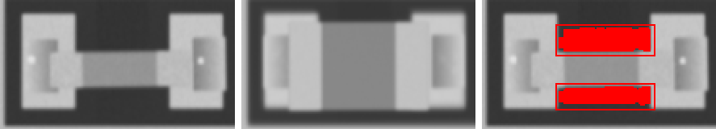 ncc 0.698 · ncc_thr 0.6 · mad 42.1 · mad_thr 7.6 · dx_mm 0.023 · dy_mm 0.0 · dtheta_deg -0.0 · anomaly_px 1415 |
| D2 LED_0805 · LED_0805 | FAIL POLARITY | 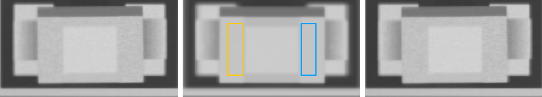 ncc 0.98 · ncc_thr 0.6 · ncc_180 0.761 · mad 4.8 · mad_thr 7.6 · mad_180 4.8 · mark_ncc -0.037 · mark_ncc_180 0.151 · dx_mm 0.0 · dy_mm 0.0 · dtheta_deg -0.0 · anomaly_px 0 |
| L1 4u7 · L_4x4 | FAIL MISMATCH | 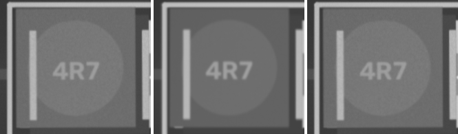 ncc 0.93 · ncc_thr 0.6 · mad 9.5 · mad_thr 7.9 · dx_mm 0.047 · dy_mm 0.0 · dtheta_deg -0.0 · anomaly_px 0 |
| Q2 A7 · SOT-23 | FAIL MISMATCH | 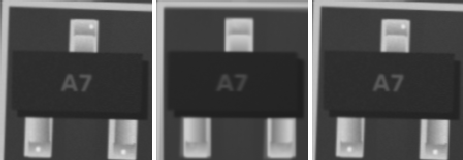 ncc 0.977 · ncc_thr 0.6 · ncc_180 0.8 · mad 7.5 · mad_thr 7.5 · mad_180 37.4 · dx_mm 0.023 · dy_mm -0.023 · dtheta_deg 2 · anomaly_px 0 |
| R10 100k · 0805 | FAIL MISMATCH | 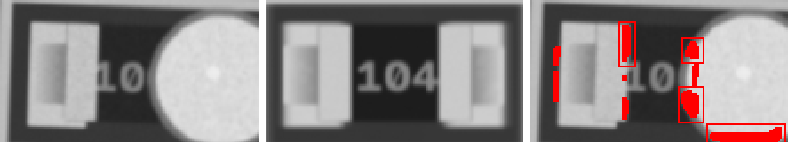 ncc 0.751 · ncc_thr 0.6 · mad 40.6 · mad_thr 9.8 · dx_mm -0.14 · dy_mm -0.047 · dtheta_deg 2 · anomaly_px 536 |
| R11 10k · 0603 | FAIL MISMATCH | 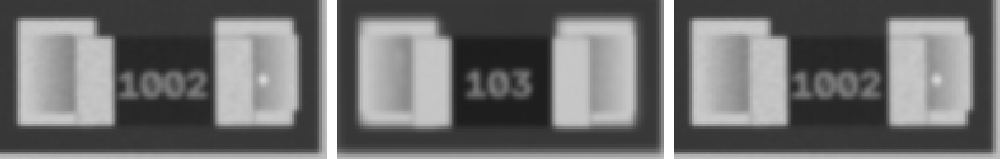 ncc 0.973 · ncc_thr 0.6 · mad 12.2 · mad_thr 10.1 · dx_mm 0.047 · dy_mm 0.0 · dtheta_deg -0.0 · anomaly_px 0 |
| R12 10k · 0805 | FAIL MISMATCH | 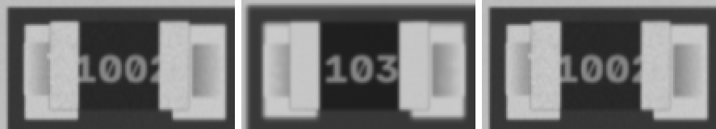 ncc 0.953 · ncc_thr 0.6 · mad 16.1 · mad_thr 9.7 · dx_mm -0.023 · dy_mm -0.023 · dtheta_deg -0.0 · anomaly_px 0 |
| R13 100k · 0603 | FAIL MISMATCH | 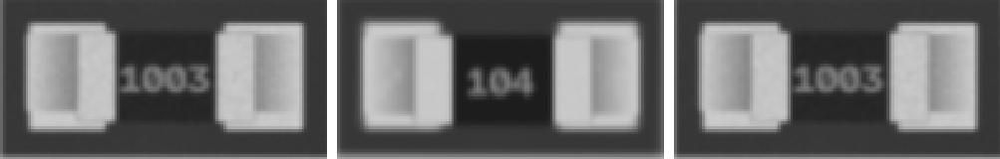 ncc 0.973 · ncc_thr 0.6 · mad 13.5 · mad_thr 10.5 · dx_mm -0.023 · dy_mm 0.0 · dtheta_deg -0.0 · anomaly_px 0 |
| R14 220 · 0402 | FAIL MISMATCH | 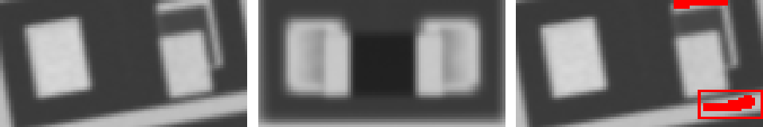 ncc 0.845 · ncc_thr 0.6 · mad 26.1 · mad_thr 9.2 · dx_mm 0.0 · dy_mm 0.093 · dtheta_deg -10 · anomaly_px 70 |
| R15 0R · 0805 | FAIL MISMATCH | 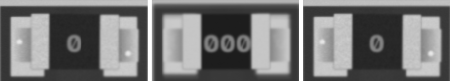 ncc 0.954 · ncc_thr 0.6 · mad 14.8 · mad_thr 9.1 · dx_mm 0.023 · dy_mm -0.047 · dtheta_deg -0.0 · anomaly_px 0 |
| R18 100k · 0805 | FAIL MISMATCH | 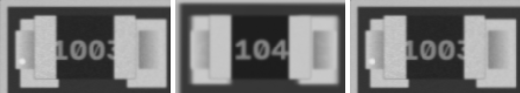 ncc 0.946 · ncc_thr 0.6 · mad 16.0 · mad_thr 9.8 · dx_mm -0.07 · dy_mm -0.07 · dtheta_deg -0.0 · anomaly_px 0 |
| R2 220 · 0805 | FAIL MISMATCH | 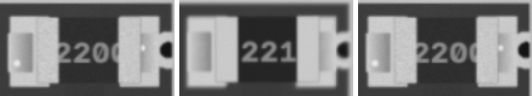 ncc 0.951 · ncc_thr 0.6 · mad 16.1 · mad_thr 9.1 · dx_mm -0.047 · dy_mm 0.0 · dtheta_deg -0.0 · anomaly_px 0 |
| R6 10k · 0603 | FAIL MISMATCH | 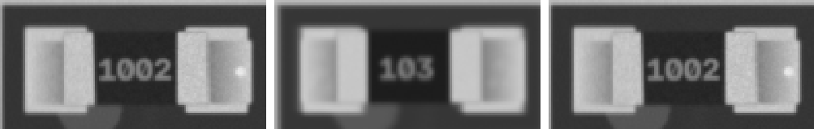 ncc 0.963 · ncc_thr 0.6 · mad 15.3 · mad_thr 13.8 · dx_mm 0.023 · dy_mm 0.0 · dtheta_deg -0.0 · anomaly_px 0 |
| R8 10k · 0805 | FAIL MISMATCH | 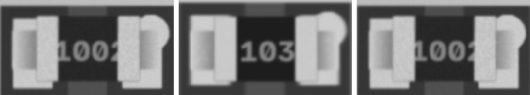 ncc 0.945 · ncc_thr 0.6 · mad 16.7 · mad_thr 10.3 · dx_mm -0.023 · dy_mm -0.07 · dtheta_deg -0.0 · anomaly_px 0 |
| R9 10k · 1206 | FAIL MISMATCH | 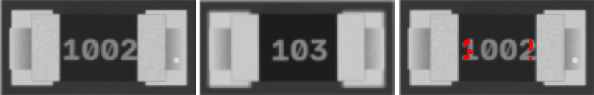 ncc 0.949 · ncc_thr 0.6 · mad 17.3 · mad_thr 9.0 · dx_mm -0.047 · dy_mm 0.047 · dtheta_deg -0.0 · anomaly_px 0 |
| U1 RP2040 · LQFP-48 | FAIL ANOMALY | 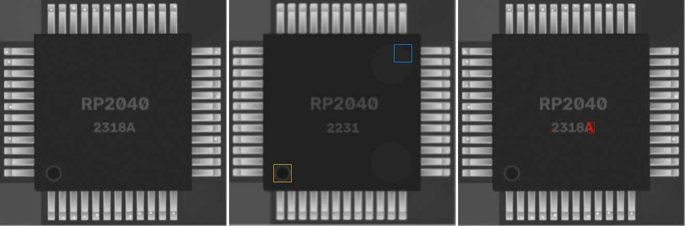 ncc 0.93 · ncc_thr 0.6 · ncc_180 0.776 · mad 6.2 · mad_thr 7.2 · mad_180 7.6 · mark_ncc 0.942 · mark_ncc_180 -0.101 · dx_mm 0.0 · dy_mm -0.023 · dtheta_deg -0.0 · anomaly_px 63 |
| U4 74LVC245 · TSSOP-20 | FAIL SHIFT ANOMALY | 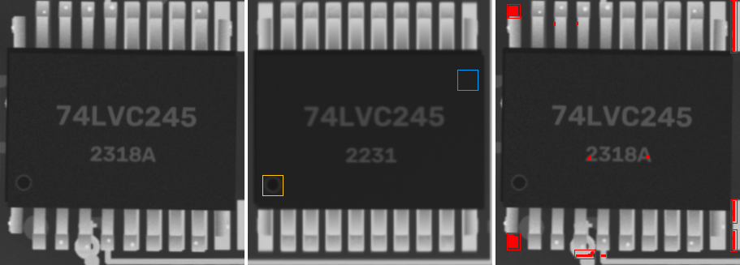 ncc 0.844 · ncc_thr 0.6 · ncc_180 0.632 · mad 7.0 · mad_thr 7.5 · mad_180 9.6 · mark_ncc 0.463 · mark_ncc_180 0.022 · dx_mm -3.256 · dy_mm 0.047 · dtheta_deg -0.0 · anomaly_px 811 |
| U5 CH340 · QFN-32 | FAIL MISMATCH | 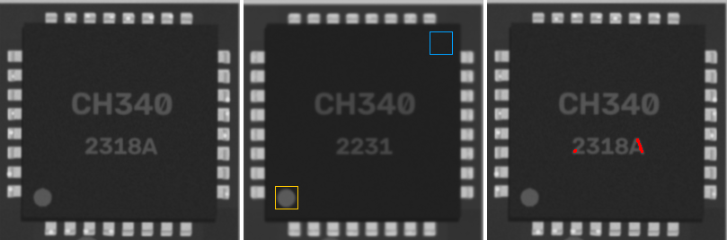 ncc 0.954 · ncc_thr 0.6 · ncc_180 0.845 · mad 7.2 · mad_thr 7.2 · mad_180 9.3 · dx_mm 0.0 · dy_mm 0.023 · dtheta_deg -0.0 · anomaly_px 0 |
| C1 47u · CP_Elec_5x5.8 | PASS | ncc 0.994 · ncc_thr 0.6 · ncc_180 0.589 · mad 2.9 · mad_thr 8.1 · mad_180 26.0 · mark_ncc 0.996 · mark_ncc_180 -0.881 · dx_mm 0.0 · dy_mm 0.023 · dtheta_deg -0.0 · anomaly_px 0 |
| C16 220u · CP_Elec_6.3x7.7 | PASS | ncc 0.998 · ncc_thr 0.6 · ncc_180 0.559 · mad 2.0 · mad_thr 7.9 · mad_180 34.3 · mark_ncc 0.995 · mark_ncc_180 -0.81 · dx_mm 0.0 · dy_mm 0.0 · dtheta_deg -0.0 · anomaly_px 0 |
| C4 100u · CP_Elec_5x5.8 | PASS | ncc 0.996 · ncc_thr 0.6 · ncc_180 0.549 · mad 2.9 · mad_thr 8.3 · mad_180 34.5 · mark_ncc 0.96 · mark_ncc_180 -0.684 · dx_mm -0.023 · dy_mm 0.0 · dtheta_deg -0.0 · anomaly_px 0 |
| C5 10n · 0402 | PASS | ncc 0.937 · ncc_thr 0.6 · mad 10.6 · mad_thr 10.7 · dx_mm 0.047 · dy_mm -0.023 · dtheta_deg -0.0 · anomaly_px 0 |
| D1 SOD-123 · SOD-123 | PASS | ncc 0.996 · ncc_thr 0.6 · ncc_180 0.847 · mad 5.8 · mad_thr 7.2 · mad_180 13.7 · mark_ncc 0.987 · mark_ncc_180 0.011 · dx_mm 0.023 · dy_mm 0.0 · dtheta_deg -0.0 · anomaly_px 0 |
| D3 SOD-123 · SOD-123 | PASS | 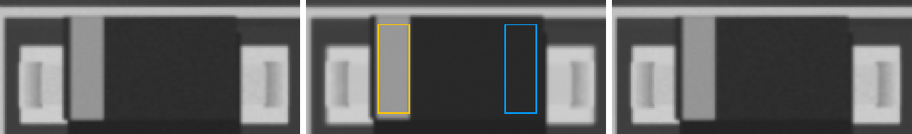 ncc 0.995 · ncc_thr 0.6 · ncc_180 0.839 · mad 5.0 · mad_thr 7.3 · mad_180 15.1 · mark_ncc 0.959 · mark_ncc_180 -0.046 · dx_mm 0.0 · dy_mm 0.0 · dtheta_deg -0.0 · anomaly_px 0 |
| D4 LED_0805 · LED_0805 | PASS | ncc 0.979 · ncc_thr 0.6 · ncc_180 0.823 · mad 5.1 · mad_thr 7.4 · mad_180 8.3 · mark_ncc -0.049 · mark_ncc_180 0.031 · dx_mm 0.0 · dy_mm -0.023 · dtheta_deg -0.0 · anomaly_px 0 |
| D5 LED_0805 · LED_0805 | PASS | ncc 0.965 · ncc_thr 0.6 · ncc_180 0.881 · mad 5.2 · mad_thr 7.5 · mad_180 8.1 · mark_ncc 0.028 · mark_ncc_180 0.006 · dx_mm -0.047 · dy_mm 0.07 · dtheta_deg -0.0 · anomaly_px 0 |
| D6 LED_0805 · LED_0805 | PASS | 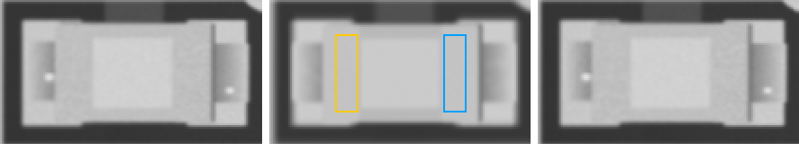 ncc 0.983 · ncc_thr 0.6 · ncc_180 0.937 · mad 4.6 · mad_thr 7.7 · mad_180 4.7 · mark_ncc 0.119 · mark_ncc_180 0.01 · dx_mm 0.023 · dy_mm 0.0 · dtheta_deg -0.0 · anomaly_px 0 |
| D7 SOD-123 · SOD-123 | PASS | ncc 0.993 · ncc_thr 0.6 · ncc_180 0.852 · mad 5.7 · mad_thr 7.1 · mad_180 15.5 · mark_ncc 0.891 · mark_ncc_180 -0.048 · dx_mm 0.023 · dy_mm -0.023 · dtheta_deg -0.0 · anomaly_px 0 |
| Q1 J3Y · SOT-23 | PASS | ncc 0.983 · ncc_thr 0.6 · ncc_180 0.535 · mad 7.1 · mad_thr 7.5 · mad_180 40.8 · dx_mm 0.0 · dy_mm -0.047 · dtheta_deg -0.0 · anomaly_px 0 |
| Q3 S4 · SOT-23 | PASS | ncc 0.961 · ncc_thr 0.6 · ncc_180 0.577 · mad 6.7 · mad_thr 7.4 · mad_180 49.4 · dx_mm 0.0 · dy_mm 0.047 · dtheta_deg -0.0 · anomaly_px 0 |
| R1 0R · 0402 | PASS | ncc 0.984 · ncc_thr 0.6 · mad 8.0 · mad_thr 9.8 · dx_mm 0.0 · dy_mm 0.0 · dtheta_deg -0.0 · anomaly_px 0 |
| R16 100k · 0402 | PASS | ncc 0.992 · ncc_thr 0.6 · mad 7.4 · mad_thr 9.4 · dx_mm 0.0 · dy_mm 0.0 · dtheta_deg -0.0 · anomaly_px 0 |
| R17 0R · 0603 | PASS | ncc 0.979 · ncc_thr 0.6 · mad 11.1 · mad_thr 12.1 · dx_mm 0.0 · dy_mm 0.0 · dtheta_deg -0.0 · anomaly_px 0 |
| R3 0R · 0402 | PASS | ncc 0.989 · ncc_thr 0.6 · mad 6.8 · mad_thr 9.4 · dx_mm -0.023 · dy_mm 0.0 · dtheta_deg -0.0 · anomaly_px 0 |
| R4 10k · 0402 | PASS | ncc 0.98 · ncc_thr 0.6 · mad 9.3 · mad_thr 10.3 · dx_mm -0.047 · dy_mm 0.0 · dtheta_deg -0.0 · anomaly_px 0 |
| R5 100k · 0402 | PASS | ncc 0.989 · ncc_thr 0.6 · mad 7.5 · mad_thr 11.0 · dx_mm -0.023 · dy_mm 0.0 · dtheta_deg -0.0 · anomaly_px 0 |
| R7 1k · 0402 | PASS | ncc 0.994 · ncc_thr 0.6 · mad 8.3 · mad_thr 10.4 · dx_mm -0.023 · dy_mm 0.0 · dtheta_deg -0.0 · anomaly_px 0 |
| U2 CH340 · QFN-32 | PASS | ncc 0.948 · ncc_thr 0.6 · ncc_180 0.716 · mad 7.0 · mad_thr 7.2 · mad_180 9.8 · mark_ncc 0.974 · mark_ncc_180 0.048 · dx_mm -0.047 · dy_mm 0.0 · dtheta_deg -0.0 · anomaly_px 0 |
| U3 NE555 · SOIC-8 | PASS | ncc 0.929 · ncc_thr 0.6 · ncc_180 0.789 · mad 6.9 · mad_thr 7.4 · mad_180 8.5 · mark_ncc 0.863 · mark_ncc_180 -0.063 · dx_mm 0.023 · dy_mm 0.023 · dtheta_deg -0.0 · anomaly_px 0 |
| Y1 Crystal_SMD_3225 · Crystal_SMD_3225 | PASS | ncc 0.987 · ncc_thr 0.6 · mad 2.6 · mad_thr 7.7 · dx_mm 0.093 · dy_mm 0.0 · dtheta_deg -0.0 · anomaly_px 0 |
| Y2 Crystal_SMD_3225 · Crystal_SMD_3225 | PASS | ncc 0.983 · ncc_thr 0.6 · mad 2.5 · mad_thr 7.8 · dx_mm 0.07 · dy_mm -0.023 · dtheta_deg -0.0 · anomaly_px 0 |